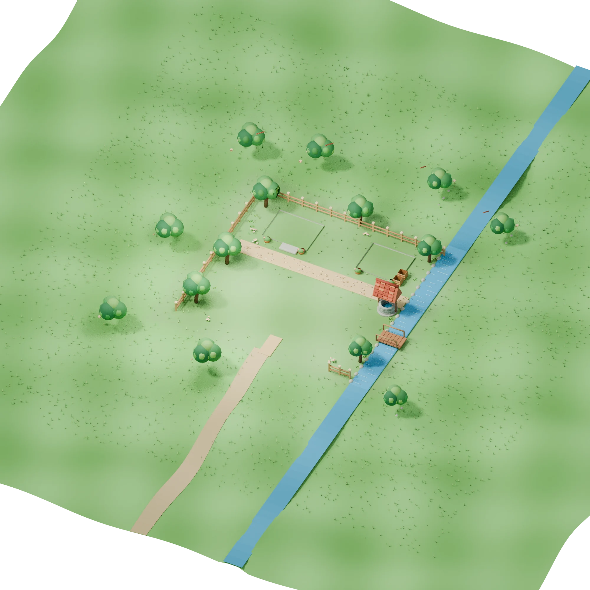
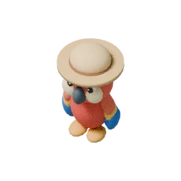

DIJI-MEDU • LEARN IN NATURE
Papi Farm
✦
120
Farm coins
1
New Farmer
0 / 80 Farm XP
Spring Valley
Loading farm…


↶
↷
−
＋
Tap a building site to begin.
Preparing your farm
ENGLISH MISSION
01
Plant three carrots.
💡
0 / 3
+25 XP
Build
Skip guide
🌱
Plant
💧
Water
🌾
Harvest
▦
Move
🧺
Storage
🏪
Market
🐔
Animals
🗺️
Map
FARM
Choose seed
×